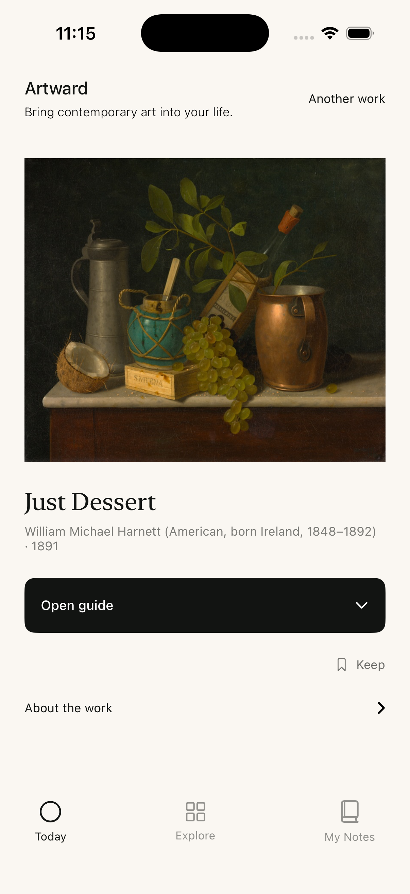
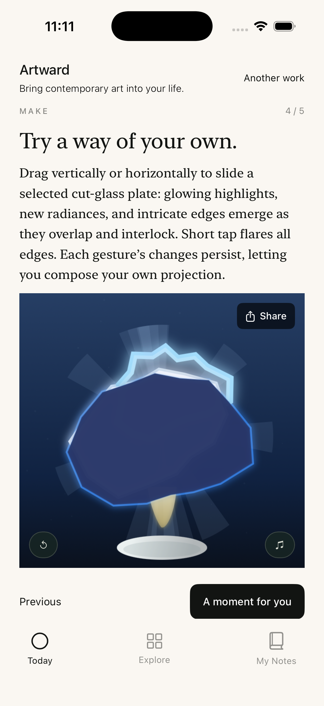
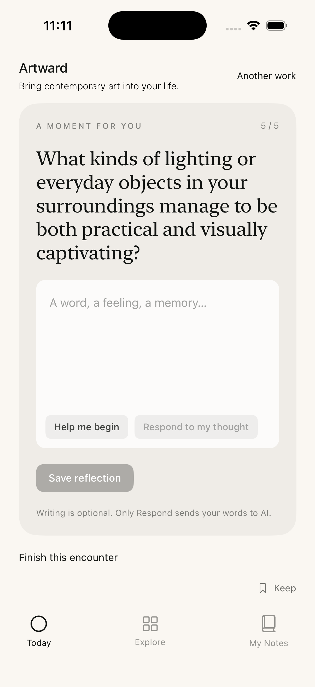
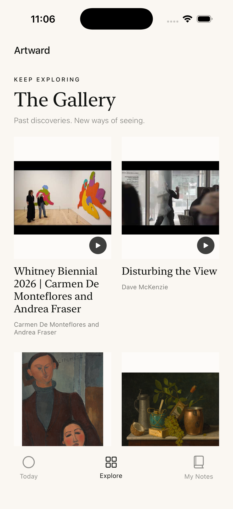

ART, WITH ROOM FOR YOU.
A different
way to see.
Bring contemporary art into your life.
Three daily discoveries. An artist’s world to enter. A small experiment to make your own. A new way to notice the everyday.
Join the iPhone beta ↗Free during the beta · No art background needed


A way into your own life.
A LITTLE ART. A LARGER WORLD.
You don’t need to know
what to think. Begin by noticing.
Artward pairs a small daily selection of artworks and artist films with a guided encounter. Follow a detail into the artist’s process, the questions behind the work, and the things it brings up for you.
A familiar object, a shift of light, an unexpected relationship. Art can change how you attend to what is already around you.

PARTICIPATE, DON’T JUST SCROLL.
Try a way
of your own.
Slide a form. Change a relationship. See what happens when you approach the same thing differently.
Each interactive practice responds to the work’s ideas. Explore through touch, make a response of your own, and share an image of what you create.
MAKE SPACE FOR WHAT STAYS.
A moment
that becomes yours.
What did you notice? What does it connect to in your life? Reflection gives an encounter somewhere to go.
Write freely, or use optional AI help to begin and explore a thought in relation to the work. Keep a reflection in My Notes and return to it over time.
Your own interpretation comes first. AI assistance is optional.

COMING IN THE NEXT APP UPDATE
A gallery
to return to.
Today’s discoveries won’t disappear tomorrow. We’re adding a Gallery below the daily selection, so you can revisit past encounters, their creative practices, and the questions they leave with you.
Preview of the upcoming Explore update.

YOUR INVITATION
Let art into
your everyday.
Start with one work. See where it takes you.
Try Artward on iPhone ↗Our installation guide helps you get TestFlight and join the beta.